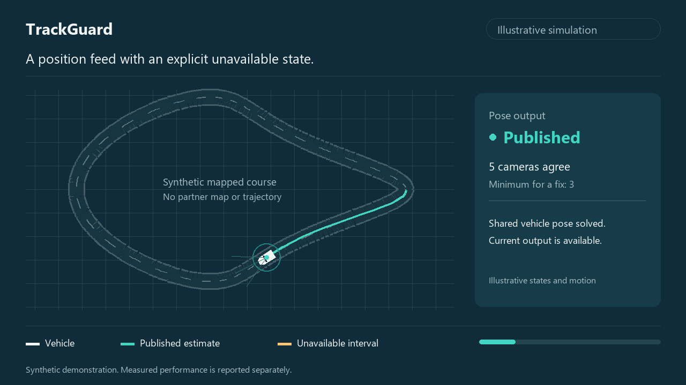

Camera-based vehicle localization
Vehicle localization from the cameras you already run.
Position and heading from seven calibrated cameras, a reference map, vehicle speed and yaw rate. Weak geometric evidence produces an explicit unavailable output.
A localization signal for your existing stack. Deployment readiness and hardware savings remain pilot hypotheses.
Localization outputSynthetic illustration

Pose admittedUnavailable
Synthetic course and motion. Not a measured trajectory.
07 calibrated cameras+Reference map+Vehicle speed and yaw rate→Vehicle pose or unavailable
Measured evidence
Precision is one part of the result.
Local targets ≤ 20 cm RMSE≥ 90% one-second coverage
Development onlySame-session, seeded evidence
Stress: coverage failsNot ranked
Day: no initializationRMSE unavailable
Evaluation window
Lateral RMSE
Occupied one-second coverage
Frame publication fraction
RMSE is not a per-output guarantee.
Unavailable frames count as misses in the within-20-cm share.
Position error p95
Planned frames within 20 cm
Accuracy against the target
RMSE in centimetres · lower is betterOnly finite published estimates contribute to RMSE. Initial truth seed excluded.
Availability has two denominators
Occupied time bins and published framesCompare every window
Overlapping windows. Do not sum.| Evaluation window | Position RMSE | Lateral RMSE | 1 s coverage | Published / planned | Truth seeds | Local result |
|---|
Compute context
Raw geometry profile.
Mean
p95
Live performance unproven
Scope and definitions
Know what the numbers mean.
How accuracy, availability and initialization are evaluated
Exact values for the selected window
Unrounded approved aggregates. Presentation values above are rounded.
Approved embedded aggregate snapshot